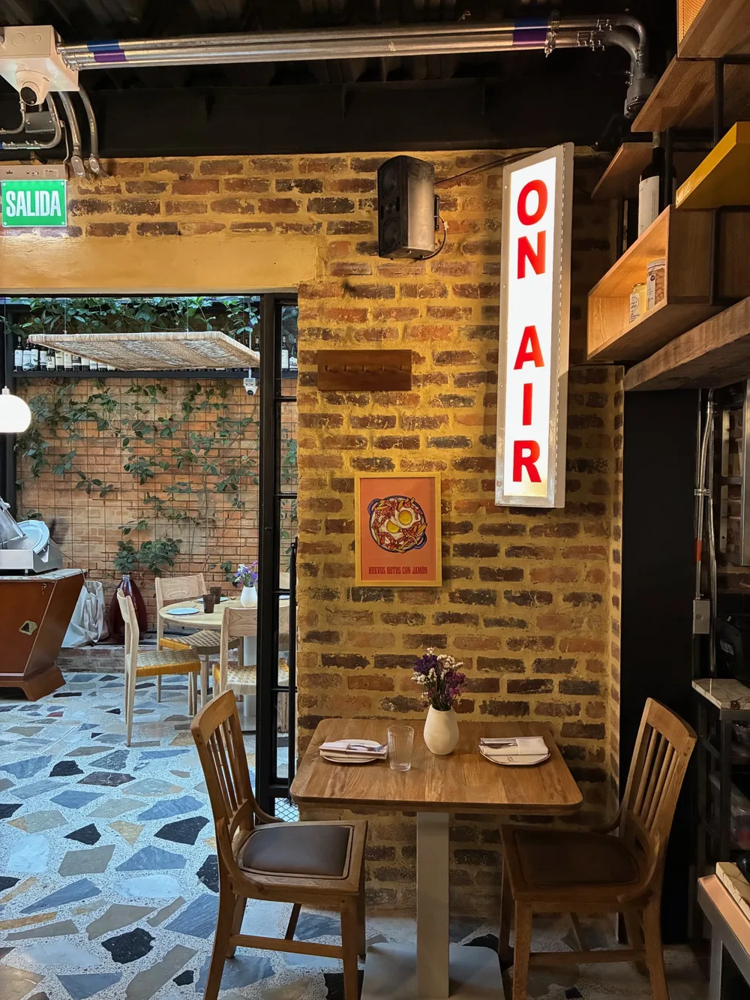
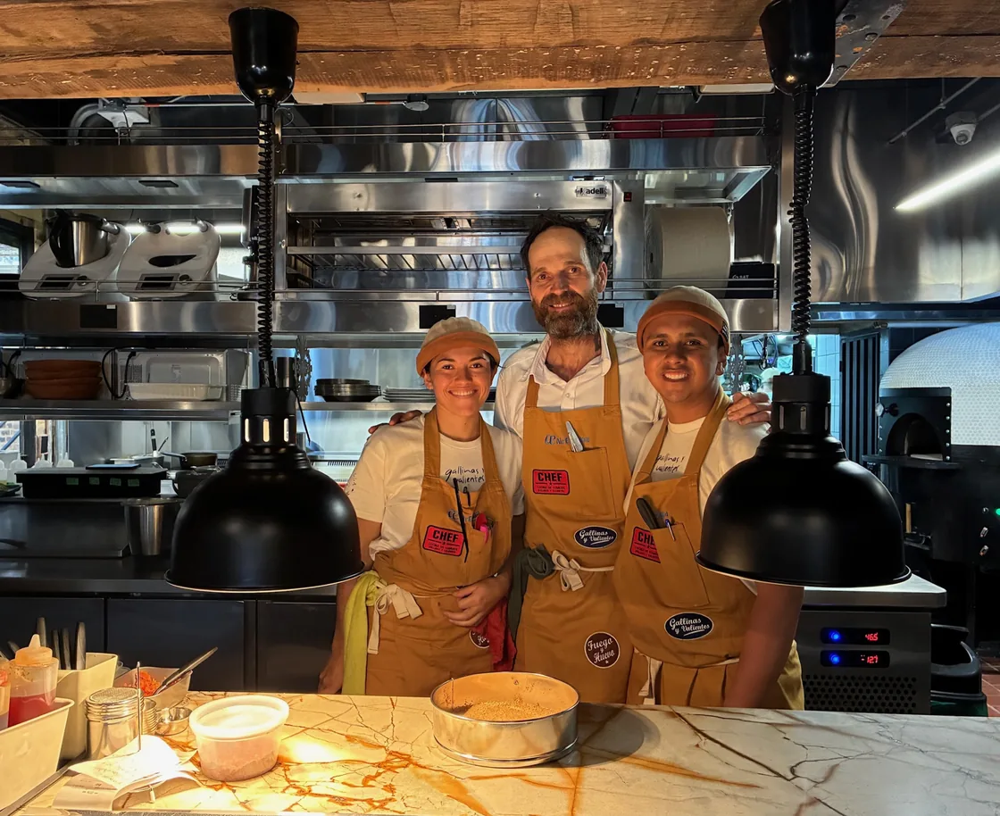

Sala y cocina
La casa
Mesas de madera, paredes de ladrillo y una cocina de tortillas, tapas y arroces que también trabaja con brasa y leña.


Koldo Miranda está al frente de la cocina de Gallinas y Valientes. La tortilla vaga de la casa rinde homenaje a la de Sacha Hormaechea, en Madrid.
Bogotá
Visita
Cerca del parque El Virrey.
Esta demo no recibe reservas ni solicitudes.
- Dirección y mapa
- Por confirmar con el restaurante.
- Horarios
- Por confirmar los horarios de sala y cocina.
- Cómo se atiende
- Por confirmar el canal de contacto y si se requiere reserva.
Gallinas y Valientes · Bogotá
Reservas
El canal oficial de reservas está por confirmar. Esta demo no recibe solicitudes.